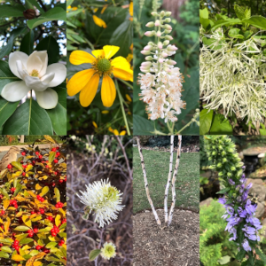

Bunny Hill Native Landscapes · Field Notes
Planting strategies, design thinking, site observations, and the slow knowledge that comes from working closely with land over time.

Featured · Planting Plans
A deep dive into how native plant palettes create resilient, low-maintenance landscapes — rooted in place, built to last, and alive with ecological purpose.
Read the postBehind-the-scenes thinking on how landscapes take shape — from first site visit to final planting.
BrowseCurated plant palettes, planting strategies, and design thinking for resilient, beautiful landscapes.
BrowseReading the land before drawing a single line — drainage, light, soil, and the quiet logic of place.
BrowseDesigning with nature's cycles — water, soil health, habitat, and landscapes that give back more than they take.
BrowseA closer look at completed projects — the challenges, the choices, and how each landscape settled into its place.
BrowsePractical knowledge from the field — the methods, materials, and hands-on practices that make the work possible.
Browse